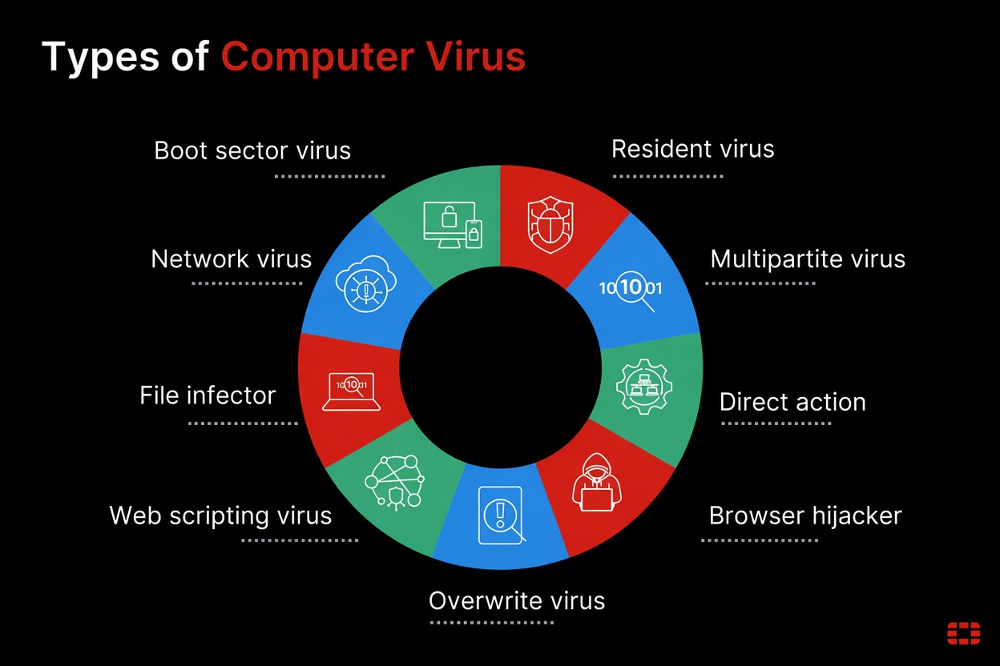
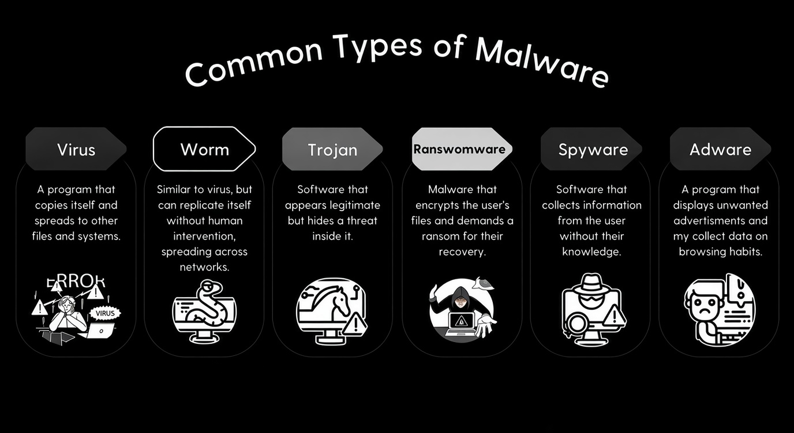
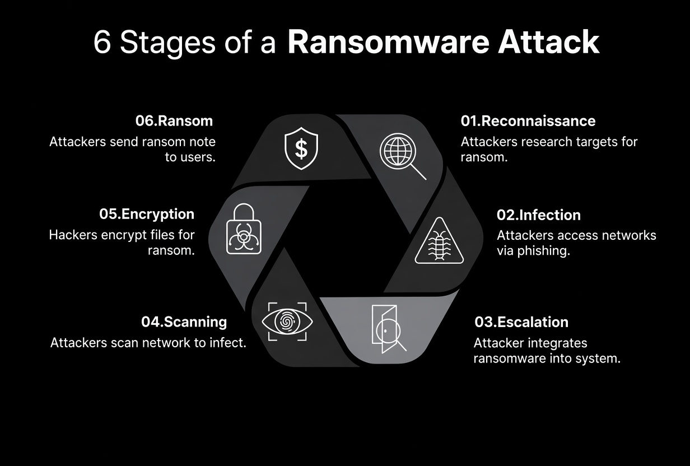
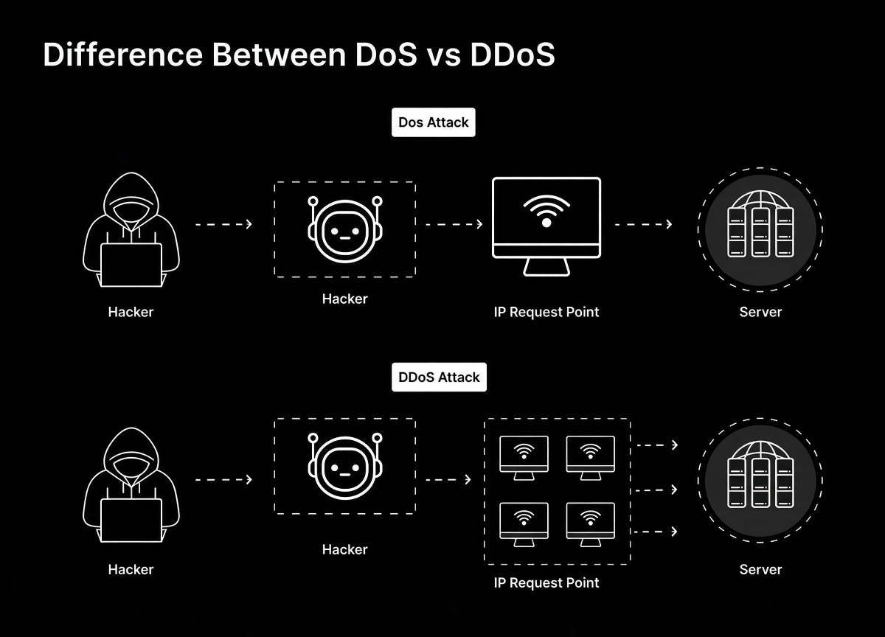
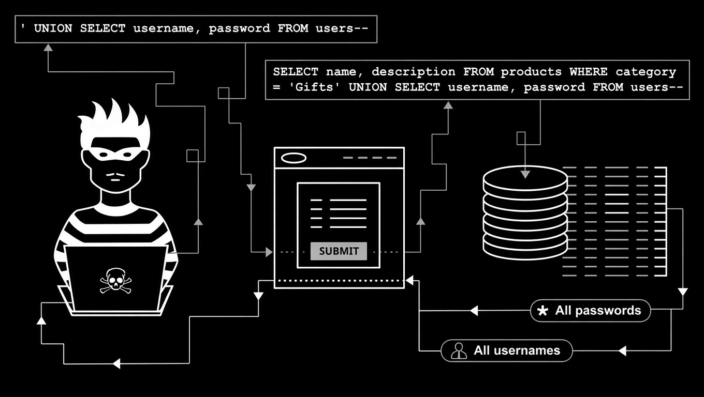
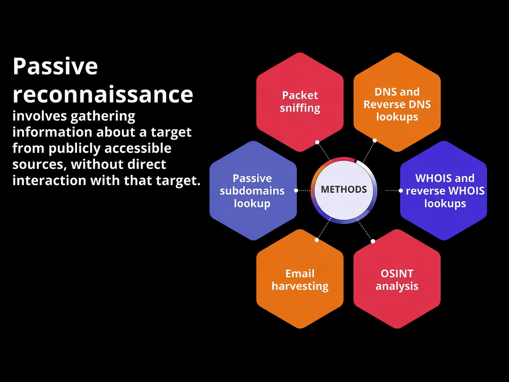

.jpeg)
.jpeg)
In today's interconnected digital landscape, protecting systems, networks, and data from digital attacks is crucial. A single breach can disrupt operations, cause financial loss, and destroy trust. Understanding how threats operate, how they infect systems, and how to prevent them is the first step toward robust defense.
Overview: A Computer Virus is a type of malicious software (Malware) designed to replicate itself by attaching to legitimate programs, scripts, or system documents. Once activated, it spreads throughout system files and network drives, corrupting data, slowing down performance, or causing complete system failures.
How it Happens (Attack Vector): Unlike some automated network worms, a virus requires user interaction to initiate. It infects systems when a user opens malicious email attachments, downloads cracked software, clicks on infected executable files (.exe), or connects unverified USB drives to their computer.
How to Stay Safe:

Overview: Phishing is a social engineering attack where malicious actors impersonate legitimate organizations, such as banks, corporate IT departments, or trusted service providers. Their goal is to trick individuals into disclosing sensitive information, including passwords, credit card numbers, or personal identifying credentials.
How it Happens (Attack Vector): Attackers send deceptive emails, SMS messages (Smishing), or create fake login portals that mirror official websites. They rely on urgency—claiming your account is suspended or a payment is required—to force victims into clicking malicious links without verifying the domain address.
How to Stay Safe:
Overview: Malware is an umbrella term for software designed to disrupt, damage, or gain unauthorized access to computer systems. Common non-viral forms include Keyloggers and Spyware designed to harvest credentials or Trojans disguised as harmless tools.
How it Happens (Attack Vector): Malware enters systems when users download compromised software packages (cracked applications), open infected email attachments, or visit drive-by download sites that exploit outdated browser plugins.
How to Stay Safe:

Overview: Ransomware is an extremely destructive form of malware that encrypts files on a device or network storage drive. The attackers then hold the decryption keys hostage, demanding extortion payments—typically in cryptocurrency—to restore system access.
How it Happens (Attack Vector): Ransomware is delivered via targeted phishing emails, unpatched operating system vulnerabilities, or exposed Remote Desktop Protocol (RDP) ports. Once inside, it quietly maps the network, encrypts backup files first, and locks primary servers.
How to Stay Safe:

Overview: A Distributed Denial-of-Service (DDoS) attack attempts to make an online service, application, or website unavailable by overwhelming it with internet traffic from multiple compromised computer systems.
How it Happens (Attack Vector): Attackers build a network of infected smart devices and servers (known as a Botnet). They direct millions of junk requests simultaneously to the target's server bandwidth or domain system, exhausting system resources and crashing the web service.
How to Stay Safe:

Overview: SQL Injection occurs when an attacker executes arbitrary SQL code on a database web server. Successful attacks can grant complete access to sensitive databases, allowing hackers to view, modify, or permanently wipe administrative data records.
How it Happens (Attack Vector): Attackers insert malicious code statements into unsanitized web application entry fields—such as search bars or user login boxes—that interact directly with the backend database infrastructure.
How to Stay Safe:

Overview: A Man-in-the-Middle attack is a form of session eavesdropping where an attacker secretly relays and alters the communications between two parties who believe they are directly interacting with each other.
How it Happens (Attack Vector): Attackers intercept unencrypted data packets transmitted across open Wi-Fi networks or use ARP spoofing and DNS poisoning techniques on local area networks to capture passwords, cookies, or financial details.
How to Stay Safe:
